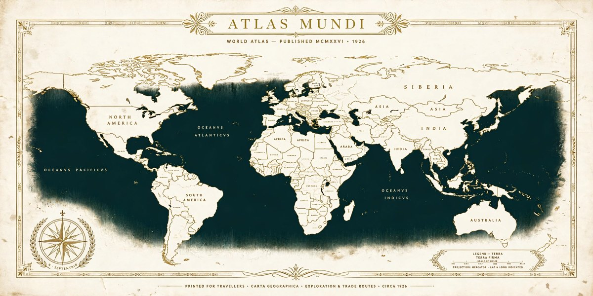

Around the World in 80 Sips
Cocktails and mocktails from all over the world. Tap a gold pin to open that country's postcards, then flip one for its recipe.

Tap a pin to see its postcards. Pins you have opened turn red.
Pick a pin on the atlas to start your trip.
Drink of the week
What can I make?
Tick what you have at home to see which cocktails and mocktails you can make. Garnishes and ice don't count, so nobody misses out over a missing cherry.
About
Hello from Wellington, New Zealand

Around the World in 80 Sips is a collection of cocktails and mocktails from all over the world. Every drink is a postcard: the front shows where it comes from, and the back has the recipe.
How it works
- Tap a gold pin on the atlas to visit a country. Europe is busy, so use Zoom into Europe to get a closer look.
- Flip a postcard to see the recipe.
- Pins you've visited turn red, so you can see how far you've travelled.
Something for everyone
Almost every country has both a cocktail and a mocktail, so kids and anyone not drinking can come along for the trip too.
What can I make?
Tick what's in your fridge and cupboard to see which drinks you can make right now, and which ones you're only one thing away from.
25 Days of Christmas
Every December, a new mystery drink opens behind a door each day until Christmas, with a mocktail version of every cocktail.
The 80 sips
Reviews and requests
Tried one of our drinks? Tell everyone what you thought. Want a drink added? Ask for it here.
Latest reviews
Drink requests
Follow our travels
25 Days of Christmas
A mystery drink behind every door, and every cocktail comes with a mocktail version. Each door opens on its day in December.